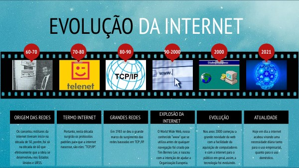
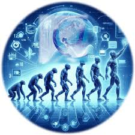

Entenda a evolução
Home | Web 1.0 | Web 2.0 | Web 3.0 | Web 4.0
Introdução
Como a web evoluiu?
Oficialmente, a internet foi criada na década de 1980, nos Estados Unidos, e, desde então, ela tem passado por diversas mudanças e transformações.
A evolução significativa da internet ocorreu com o desenvolvimento de protocolos como o TCP/IP, nos anos 1970 e 1980, e a criação da World Wide Web, por Tim Berners-Lee, nos anos 1990, tornando-a mais acessível e amigável ao usuário.

Conclusão
A web 1.0 era estática, mas passou a fazer o que não era possível: informação em massa e velocidade para todo o mundo.
Na web 2.0 evoluiu para que os usuários deixassem de ser passivos e passasse a gerar conteúdo, a interagir e a gerar informações.
A web 3.0 passou a ser mais tecnológica e interativa, onde os usuários passaram a utilizar a inteligência artificial, blockchain e realidade virtual para criar uma experiência online mais avançada.
A web 4.0 gera mudanças de maneira direta na forma de nos relacionarmos e nos posicionarmos perante a sociedade, Afinal os consumidores e as empresas têm aumentado cada dia mais os seus requisitos de qualidade e necessidade.
A web 4.0 promete aumentar cada vez mais a experiência, e as oportunidades para construir um negócio de sucesso, e aplicação do uso da tecnologia como a inteligência artificial, promovendo o relacionamento constante entre máquinas e humanos! Passa-se a se falar da internet das coisas.
Podemos esperar mais agilidade, dinamicidade e rapidez entre os relacionamentos! E você está preparado para viver essa mudança?

Referências e links:
Navegando pelas eras digitais: dos primórdios da Web 1 à revolução da Web 3 - Marketing Digital - malvamarketingdigital.com